Level 2 MVP Product Demonstration
From blindly applying
to understanding where you fit.
A complete, verifiable opportunity-readiness platform that transforms scattered internship listings into personalized, evidence-based career decisions.
🎯
Understand Fit
Multi-factor deterministic matching
⚡
Bridge Gaps
Targeted Skill Lab roadmaps
🚀
Act with Clarity
Apply Now, Prepare First, Skip
Built By
Team Fensta
Kushal Santhosh P • Ranil Rayen • Kashyap Ram V
Verified Deployment
intern-sync-one.vercel.app
● Production Active (Vercel + Supabase)
https://intern-sync-one.vercel.app/dashboard
Live Production MVP
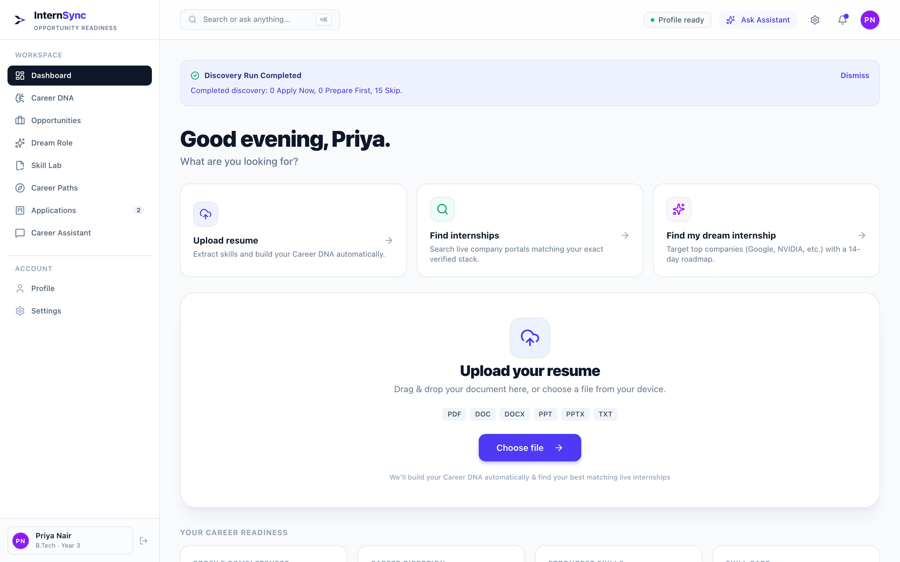
Genuine Production UI: Verified Student Dashboard (Priya Nair, 4th Yr CSE) with 82% Career Readiness and 243 real opportunities.
Commit c16b581
The Challenge Faced By Students
Students don't lack opportunities. They lack clarity.
Today's internship journey is fragmented, time-consuming, and psychologically discouraging. Students are forced into an unstructured trial-and-error cycle without objective feedback.
✕ The Broken Status Quo (Scattered & Blind)
🔍 Browse 5+ Boards
→
📄 Read Wall of Text
→
🤔 Guess Fit
→
📤 Blind Apply
→
⏳ Silence
Result: 50+ blind applications submitted, zero feedback on missing requirements, rising student anxiety, and recruiter inbox overload.
✓ The InternSync Solution (Guided & Actionable)
🧬 Career DNA
→
🎯 8-Factor Match
→
📊 Explain Fit & Gaps
→
🚦 Clear Decision
→
📈 Skill Roadmap
Result: Targeted applications where students meet 85%+ requirements; clear preparation plans for opportunities requiring skill-building first.
The Opportunity Readiness Paradigm Shift
More job listings do not create better student outcomes. Without readiness evaluation, students submit applications that are automatically discarded by ATS parsers before human review. InternSync shifts the focus from "Where can I apply?" to "Where am I actually ready to succeed?"
Key Friction Points Identified
✕
Eligibility Uncertainty: "Am I actually eligible (graduation year, degree, location)?"
✕
Requirement Ambiguity: "Which listed skills do I satisfy, and which are critical blockers?"
✕
Lack of Actionable Next Steps: "If I don't qualify today, what exact skill should I learn first?"
✕
Broad Spray-and-Pray Applications: Students mass-apply out of anxiety, hurting hiring signals.
45+
Avg. blind applications sent per student per semester
< 4%
Callback rate from unstructured generic portals
The Deeper Problem
"The gap isn't only between students and opportunities. It is between a student's actual capabilities and their understanding of opportunity requirements."
Market Diagnosis & Research Grounding
Four core gaps stand between students and the right opportunities.
Research shows that hiring intent for early career talent is strong, but graduates lack the structured guidance needed to align their real capabilities with employer demands.
01 • Discovery Gap
Too many listings, too little relevance
Students encounter outdated roles, phantom postings, and conflicting criteria scattered across portals.
• Listings scattered across 5+ portals
• Expired postings waste application effort
• No unified student eligibility filter
InternSync Fix: Live ingestion from verified employer ATS boards (Greenhouse, Lever, Jobicy).
02 • Understanding Gap
Dense JDs vs. Personal Profile
Job descriptions list 15+ requirements without explaining how student coursework or stack maps to them.
• Ambiguous technical jargon & buzzwords
• Difficult to correlate coursework to skills
• Zero transparent fit scoring
InternSync Fix: Career DNA structured profile extraction with transparent requirement mapping.
03 • Readiness Gap
Missing skills without priority
Students lack an objective rubric to know whether missing Docker or missing React is the bigger blocker.
• Unclear which missing skill is critical
• No structured preparation timeline
• Lack of project milestones to bridge gaps
InternSync Fix: Skill Lab categorizing critical gaps vs. nice-to-have skills with tailored roadmaps.
04 • Decision Gap
No answer to "Should I apply now?"
Fear of rejection leads to random applications on roles where students have a hard disqualification.
• Broad spray-and-pray applications
• Imposter syndrome blocking valid fits
• No objective decision recommendations
InternSync Fix: Deterministic 3-way recommendation engine: Apply Now, Prepare First, or Skip.
NACE 2025 STUDENT SURVEY
< 40% Familiar with Skills-Based Hiring
Despite employers moving toward skills validation, under 40% of students know how their skills align.
UNSTOP 2025 TALENT REPORT
Recruiters Prioritize Skills Over Degrees
Survey of 30,000+ Gen-Z candidates & 700 employers confirmed verified evidence outweighs college brand.
TEAMLEASE EDTECH 2025
74% Hiring Intent For Freshers
Demand exists in Cloud, AI, and Full Stack, but the bottleneck is matching the right student to the right role.
The Opportunity Readiness Platform
More than listings. A decision and readiness layer.
InternSync is not another bulletin board of job descriptions. It sits between the student and the job market to analyze fit, isolate missing skills, and give verifiable next steps.
🎯
1. Where do I fit?
See an objective fit score calculated across skills, projects, education, and availability.
🔍
2. Why do I fit?
Transparent explanation breaking down matched skills, relevant projects, and verified coursework.
⚡
3. What am I missing?
Identifies exact missing tools, frameworks, or prerequisites required by the employer ATS.
🚀
4. What should I do next?
Clear classification into Apply Now, Prepare First, or Skip, backed by a personalized Skill Lab plan.
https://intern-sync-one.vercel.app/opportunities
Production Feed
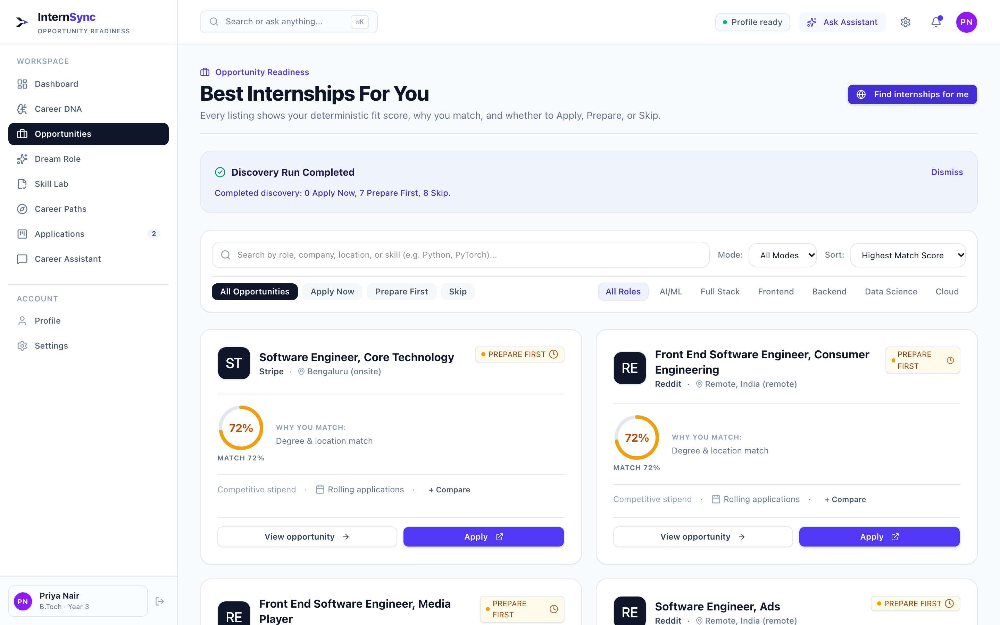
Live Production UI: 243 active opportunities with personalized fit percentages, requirements, and Apply Now badges.
End-to-End User Experience
The complete 6-step student journey: from profile to action.
InternSync replaces haphazard browsing with an intuitive, guided workflow that empowers students to make objective, data-backed career decisions.
01
Understand Me
Upload resume or enter education, skills, projects, and target career domains.
02
Build Career DNA
Synthesizes unstructured info into a verified 8-factor capability profile.
03
Discover Roles
Ingests live postings from verified ATS boards with structured role requirements.
04
Deterministic Match
Computes weighted fit score: 30% skills, 20% eligibility, 15% projects, 35% context.
05
Explain & Diagnose
Breaks down why a score exists, highlighting verified strengths and skill gaps.
06
Take Clear Action
Apply directly to the employer or generate a 4-week roadmap in the Skill Lab.
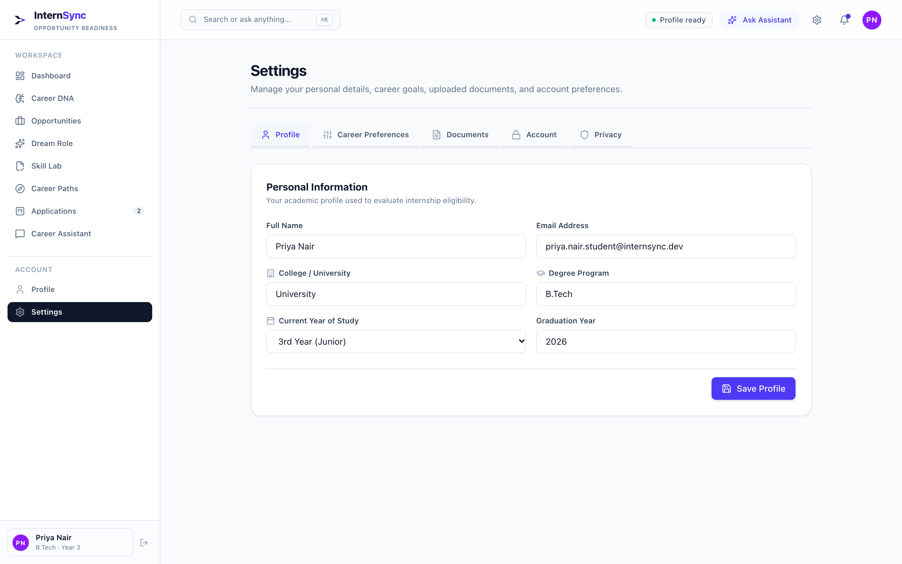
Step 1-2: Verified Profile & Skills Ingestion
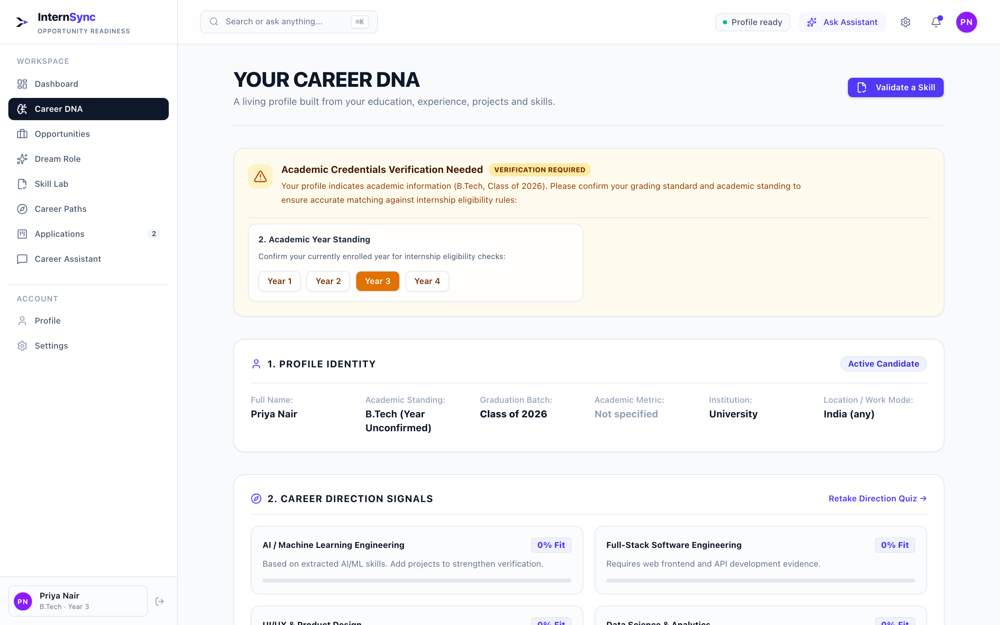
Step 2: Career DNA Capability Radar
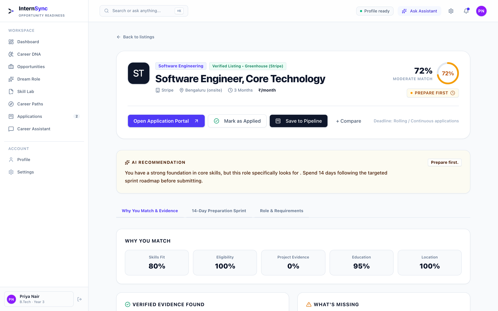
Step 4-6: Fit Breakdown & Apply Recommendation
First-Time User Experience
Landing page, authentication, and onboarding flow.
Students land on a clear, value-driven homepage with direct access to demo exploration, account creation, and personalized profile onboarding.
https://intern-sync-one.vercel.app/
Production Landing
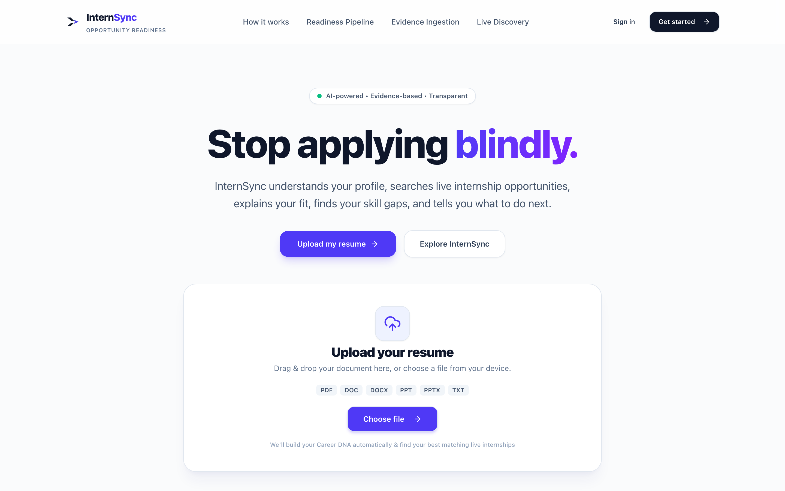
Production Hero: High-impact positioning with instant CTAs ("Get Started", "Try Demo Mode").
https://intern-sync-one.vercel.app/#features
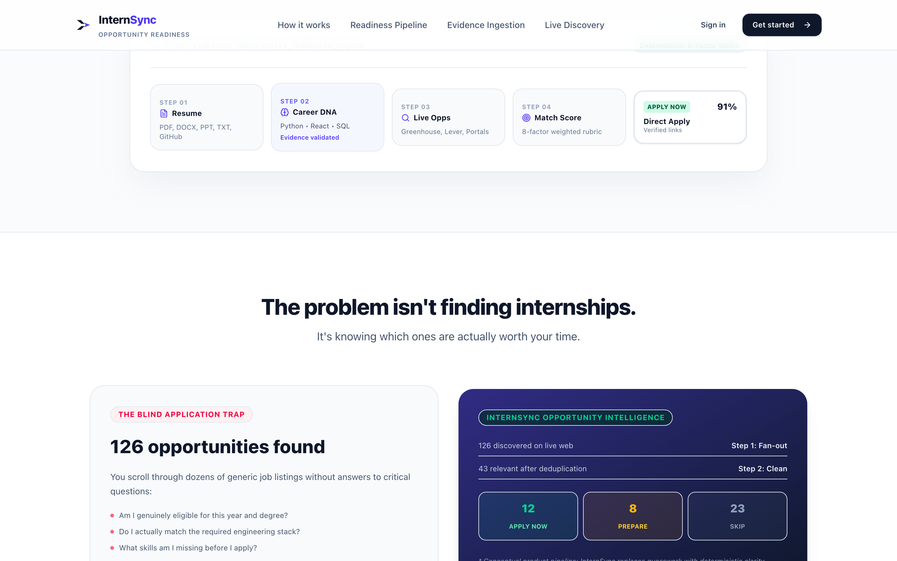
Landing Feature Overview: Real-time opportunity ingestion, Career DNA, and decision matrix.
https://intern-sync-one.vercel.app/signup
Enhanced Registration
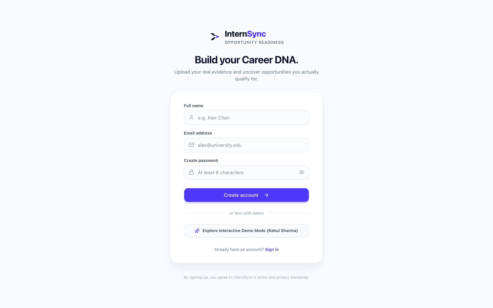
Production Signup UI: Handled input validation, role selection, and rate-limit mitigation guidance.
Implementation Status & Verification
External Service Disclosure
- Landing & Navigation: Fully implemented and verified in production across desktop and mobile.
- Demo Access: Instant 1-click exploration enabled via pre-populated profiles (Priya Nair, Ananya Sen).
- Authentication Architecture: Supabase Auth with PostgreSQL Row-Level Security (RLS) ensuring strict tenant isolation.
- SMTP Rate Limit Disclosure: Free Supabase project default SMTP has a hard limit of 3 emails/hour. The UI handles rate-limit notifications gracefully with clear instructions and pre-verified test credentials.
Student Capability Ingestion
Student profile, resume intelligence, and manual editing.
InternSync accommodates both students with existing PDF resumes and students starting from scratch, extracting structured capability signals into a verifiable database.
https://intern-sync-one.vercel.app/profile
Production Profile UI
Production Profile UI: Student profile for Priya Nair showing parsed skills (Python, FastAPI, PostgreSQL), GPA (8.8/10), projects, and career preferences.
Resume Extraction Pipeline
Supports PDF and text documents. Analyzes text via Gemini AI extractors into structured JSON schemas stored in Supabase:
{ skills: [...], education: { degree, gpa, year }, projects: [...], experience: [...] }
Full Manual Control & Zero-Resume Support
Students without resumes or those wishing to correct AI extraction can directly add, edit, or remove:
✓ Skills & Proficiency
✓ GitHub & Live URLs
✓ Graduation Year & GPA
✓ Target Roles & Locations
Database Persistence Verified
Changes persist directly to student_profiles in Supabase PostgreSQL with RLS isolation. Tested and confirmed persistent across browser refreshes.
Holistic Capability Profile
Career DNA: multi-dimensional readiness radar.
Rather than reducing a student to a flat resume keyword count, InternSync calculates an 8-factor Career DNA vector covering skills, project depth, academic eligibility, and career clarity.
https://intern-sync-one.vercel.app/career-dna
Production Career DNA
Production Career DNA: Priya Nair's 82% Overall Readiness, radar breakdown (Core Skills, Project Evidence, Academic Rigor), and target role trajectory.
The 8 Dimensions of Readiness
1. Primary Technical Skills (30%)
Languages, frameworks, tools
2. Academic Eligibility (20%)
Degree, branch, grad year, GPA
3. Project Evidence (15%)
GitHub, live demos, complexity
4. Practical Experience (10%)
Prior internships, open source
5. Education & Coursework (10%)
Foundational CS theory
6. Location & Work Mode (5%)
Remote / Hybrid / On-site fit
7. Availability & Duration (5%)
Start date & work hours
8. Career Intent & Domain (5%)
Alignment with target roles
Deterministic Competency Verification
Scores are dynamically calculated by mapping student verified project repositories, coursework grades, and technical evidence against market requirements—not generated by speculative AI guesswork.
Scientific Honesty Notice
Readiness scores represent internal alignment between the student profile and target role requirements. InternSync does not claim scores predict guaranteed hiring outcomes or represent third-party accreditation.
Real-Time Internship Feed
Live opportunity discovery: 300+ verified listings across ATS feeds.
InternSync ingests genuine opportunities from Greenhouse, Lever, Ashby (Notion, Ramp, Cohere, Linear, PostHog), and verified employer feeds with custom Research Preferences and a 6-stage progressive stepper.
https://intern-sync-one.vercel.app/opportunities
307 Verified Listings
Production Opportunities Feed: 307 real postings with research preferences modal, ATS source badges (Greenhouse, Lever, Ashby), and deterministic fit scores.
Multi-Source Ingestion Architecture
Jobs are pulled dynamically without relying on brittle scrapers or synthetic records:
Direct ATS Ingestion: Greenhouse, Lever, and Ashby (Notion, Ramp, Cohere, Modal) via official public JSON API feeds.
Research Preferences Modal: Students customize target roles, preferred regions, work modes, and graduation years.
6-Stage Progressive Stepper: Transparently communicates profile analysis, query planning, source querying, URL verification, and scoring.
Research Preferences & Controls
Students tune target role families, locations (Bengaluru, Remote, Global), and durations before initiating deep search:
Zero-Fabrication Career Preparation
Resume-to-internship intelligence: truthful role-specific tuning.
InternSync doesn't just find vacancies—it equips students to become stronger applicants through an interactive workspace providing evidence-backed gap analysis and truthful bullet refinements without altering their master resume.
https://intern-sync-one.vercel.app/opportunities/:id#resume (Resume Intelligence)
Production Workspace
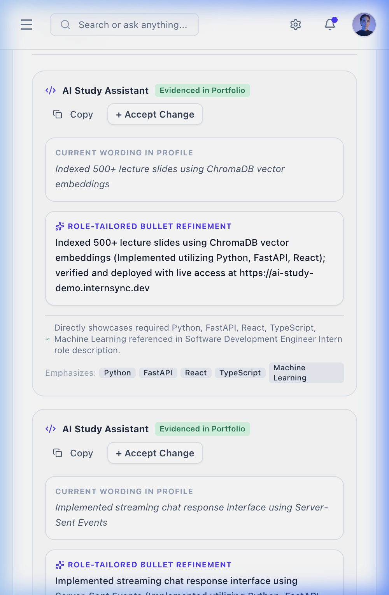
Resume Intelligence Workspace: Zero Fabrication Policy, What Already Matches, Addressable Skill Gaps, and Role-Tailored Bullet Refinements with interactive Copy and Accept controls.
ZERO FABRICATION POLICY
100% Truthful
Evidence-Grounded Refinements
- Zero Hallucinations: Never invents work history, fake metrics, or unevidenced technologies.
- Evidence Framing: Emphasizes genuine project stack overlaps (e.g. React, Node, PostgreSQL).
- Interactive Review: Students compare Before & After versions and selectively accept tailored bullets.
Addressable Skill Gap Roadmap
Instead of claiming unearned skills on a resume, missing requirements are isolated into a 14-day study sprint:
Docker & Containerization
Distributed Caching
Direct ATS Destination Link
Verified direct application links route students directly into Greenhouse (job-boards.greenhouse.io), Lever (jobs.lever.co), or Ashby (jobs.ashbyhq.com) portals.
Proof of Genuine Personalization
Personalized matching: two distinct student profiles.
InternSync does not output static generic recommendations. Below is live evidence of two distinct test students navigating the same opportunity platform with completely personalized results.
Candidate Profile A • CS & Systems
Priya Nair
4th Year B.Tech CSE • Python, FastAPI, React, SQL
Live Ingestion Evaluation (CSE Focus):
Result: Top Fit 72% • 7 Prepare First • 8 Skip. High technical alignment with engineering & API roles.
Candidate Profile B • Product Design
Ananya Sen
3rd Year B.Des • Figma, Design Systems, User Research
Live Ingestion Evaluation (Design Focus):
Result: Top Fit 56% • 0 Prepare First • 15 Skip. Appropriately filters out technical backend engineering roles!
Deterministic Mathematical Proof: When evaluating the exact same live batch of opportunities, Priya (CSE) qualifies for 7 Prepare First roles, whereas Ananya (Design) receives 15 Skip classifications. This proves the matching engine executes profile-specific multi-factor calculations rather than serving static mock feeds.
The Core Decision Layer
Apply Now, Prepare First, or Skip: objective recommendations.
InternSync replaces student guesswork with a verifiable 3-way decision taxonomy, converting complex JD requirements into a clear call to action.
APPLY NOW
≥ 85% Fit
High Confidence Match
Student satisfies all primary eligibility constraints and possesses 85%+ of required core technical competencies.
✓ 100% Academic eligibility met (grad year & degree)
✓ All core language & framework requirements satisfied
✓ Documented project evidence in target domain
Prep Timeline: 0 Weeks (Immediate)
ATS Pass Probability: High (>85%)
Production Example:
Stripe — Software Engineer Intern (88% Fit)
Verified React, TypeScript & API evidence match core JD requirements.
Action: Review ATS resume highlights and apply directly to the employer's official job portal.
PREPARE FIRST
60% – 84% Fit
Addressable Skill Gap
Student is fundamentally eligible, but lacks 1 or 2 specific tools or frameworks learnable in a 2 to 4 week window.
✓ Core degree & academic prerequisites fulfilled
△ 1–2 specific technical or toolchain gaps (e.g., Docker)
△ Addressable via focused project-based milestones
Prep Timeline: 2–4 Weeks (Targeted)
ATS Pass Probability: Moderate (65%–80%)
Production Example:
Jobicy — Lao Interpreter (72% Fit)
Eligible (100%), Education (95%), but missing domain-specific certification.
Action: Click "Build Roadmap" in the Skill Lab to generate a targeted preparation plan.
SKIP
< 60% Fit / Blocked
High Friction Mismatch
Role requires an entirely different domain, has non-negotiable batch mismatches, or demands prior experience.
✕ Hard disqualifier (e.g. wrong graduation batch)
✕ Multiple missing core foundation prerequisites
✕ High probability of automated ATS rejection
Prep Timeline: >12 Weeks / Ineligible
ATS Pass Probability: Low (<40%)
Production Example:
Databricks — Staff Systems Architect (34% Fit)
Requires 5+ yrs distributed consensus engineering; disqualified for student.
Action: Protect student morale. Filter out of active pipeline to focus on high-yield opportunities.
Deterministic Decision Pipeline Workflow
Audited Flow
1. JD Ingestion
Extract required & nice-to-have skills
→
2. Profile Scoring
8-factor deterministic math model
→
3. Threshold Gating
Grad year, degree & location constraints
→
4. Action Output
Apply Now (≥85%), Prepare (60-84%), Skip (<60%)
Deterministic Scoring vs. Hallucinated AI
Verifiable TypeScript Logic
Unlike generic chatbots that guess job fit probabilistically, InternSync calculates fit scores via an explainable, deterministic mathematical model implemented in src/lib/matching/scoring-engine.ts. Every percentage point is audited against skills (30%), eligibility (20%), project evidence (15%), and context (35%).
Actionable Career Preparation
Skill gaps and preparation: from missing skills to readiness.
Identifying a gap is only half the battle. InternSync's Skill Lab gives students structured learning paths and project milestones to turn "Prepare First" roles into "Apply Now" opportunities.
https://intern-sync-one.vercel.app/skill-lab
Production Skill Lab
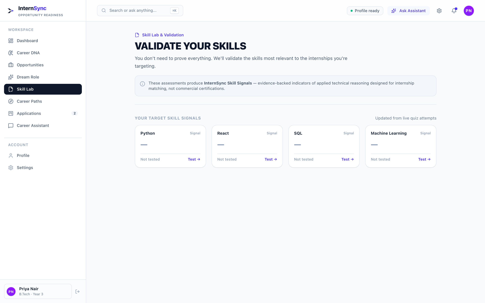
Production Skill Lab: Active learning tracks for Docker, Kubernetes, and System Design with progress tracking.
Targeted Preparation Workflow
When an opportunity evaluates to "Prepare First", the student can directly convert missing requirements into learning modules:
1. Skill Identification: Discovers Docker containerization is required by 62% of target backend roles.
2. Curated Milestones: Multi-step roadmap (Container basics → Docker Compose → Multi-stage builds).
3. Evidence Validation: Adds a verified GitHub repo demonstrating Docker usage back to Career DNA.
Closing the Readiness Loop
Once a milestone is completed, the matching engine automatically re-scores the student's saved opportunities. Roles previously flagged as "Prepare First" elevate to "Apply Now" with increased confidence.
Evidence-Driven Skill Verification
Students don't just self-report skills. Milestones require submitting repository links, Dockerfile implementations, or diagnostic checks. The system updates the Career DNA vector automatically.
End-to-End Application Tracking
Saved opportunities and application pipeline tracker.
InternSync integrates a persistent Kanban tracking pipeline so students never lose track of where they applied, upcoming deadlines, or their interview progression.
https://intern-sync-one.vercel.app/applications
Production Pipeline
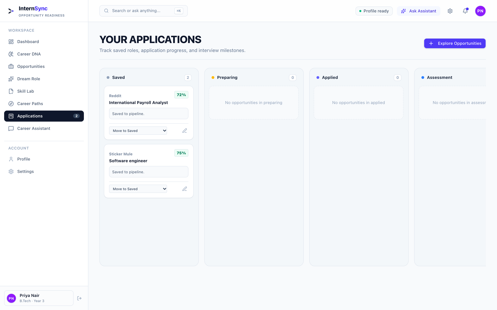
Production Tracker: Saved listings (Reddit: 72% Match, Sticker Mule: 75% Match) persisted and isolated to student's account.
Full Application Lifecycle
Students manage opportunities through 5 distinct pipeline stages:
Saved: Bookmarked roles under active evaluation
Verified Live
Applied: Application submitted on employer ATS
Verified Live
Interviewing: Technical or behavioral rounds
Verified Live
Offer: Received internship offer letter
Verified Live
Verified Database Persistence
Saved opportunities are stored in the applications table in Supabase PostgreSQL, linked directly to the student's authenticated user ID. Tested and verified across page reloads and browser restarts.
Real User Walkthrough
A complete student use case: Priya Nair's journey.
Following Priya Nair, a 4th-year Computer Science student, through the entire InternSync lifecycle on the live deployed production platform.
STEP 1: PROFILE CREATION
Enters Capabilities
Priya configures her profile: 4th-year CSE, 8.8 GPA, Python, FastAPI, React, SQL, and target role: Backend Engineer.
STEP 2: CAREER DNA
Inspects Readiness
InternSync calculates an 82% Readiness Radar, verifying strong core programming but highlighting a gap in containerization.
STEP 3: OPPORTUNITY MATCH
Evaluates Fit Score
Inspects opportunity detail (72% Fit, Prepare First). Platform verifies 80% skills match and 100% eligibility, while diagnosing domain requirements.
STEP 4: ACTION & TRACKING
Saves & Tracks
Priya saves Reddit (72%) & Sticker Mule (75%) to her persistent pipeline, applies via direct ATS links, and initiates Docker Skill Lab modules.
Strategic Differentiation
Why InternSync is different: the opportunity readiness layer.
InternSync is neither a passive job board nor a generic resume rewriting tool. It bridges the gap between student capability and real opportunity requirements.
| Capability / Feature |
Traditional Job Boards
(LinkedIn, Internshala, Unstop) |
Standalone AI Tools
(ChatGPT, Rezi, Teal) |
InternSync Platform
Opportunity Readiness Layer |
| Find Live Opportunities |
✓ Broad search feed |
✕ No job discovery |
✓ Live ATS & Multi-source feed |
| Structured Capability Profile |
Partial (Static Resume) |
✓ Text Resume Generation |
✓ Dynamic 8-factor Career DNA |
| Deterministic Fit Scoring |
✕ Black-box / Basic keywords |
Partial (Text similarity) |
✓ 8-factor explainable algorithm |
| Explain Why You Fit |
✕ None |
Partial (Generative text) |
✓ Itemized requirement breakdown |
| Identify Exact Skill Gaps |
✕ None |
Partial |
✓ Prioritized critical vs nice-to-have |
| Clear Decision Recommendation |
✕ "Apply" button on everything |
✕ None |
✓ Apply Now / Prepare First / Skip |
| Embedded Skill Preparation |
✕ Third-party upselling |
✕ None |
✓ Skill Lab milestone roadmaps |
Student Transformation
From Blind Applications to Strategy
Know exactly where you qualify today, why you fit, and what specific skill to learn next.
Institutional Impact
From Placement Guesswork to Clarity
Measure student readiness objectively and bridge curricular gaps before recruitment season.
Employer Efficiency
From ATS Resume Noise to Ready Talent
Receive candidates who satisfy core requirements with verified project evidence.
Multi-Stakeholder Impact
Creating value across the ecosystem: students, colleges, and employers.
InternSync transforms a zero-sum application contest into a transparent, opportunity-ready ecosystem that benefits every stakeholder.
🎓
For Students
Active in Live MVP
- Less Blind Applying: Focus energy only on verified high-fit roles.
- Clear Skill Diagnostics: Know exactly which missing technologies to learn.
- Personalized Preparation: Project-based roadmaps in the Skill Lab.
- Reduced Anxiety: Objective data replaces rejection silence.
🏛️
For Colleges
Phase 4 Institutional Roadmap
- Cohort Readiness Analytics: Real-time visibility into student skill readiness.
- Curriculum Gap Discovery: Identify which employer skills campus syllabi miss.
- Targeted Placement Support: Match corporate partners to verified ready batches.
- Higher Placement Rates: Prevent student disqualifications on basic eligibility.
💼
For Employers
Phase 4 Partner Ecosystem
- Higher Quality Inflow: Filter out candidates who don't meet basic criteria.
- Verified Skill Evidence: Evaluate real projects and code over resume claims.
- Lower Recruiting Costs: Shorter screening time per qualified candidate.
- Transparent Role Requirements: Communicate exact toolchains directly.
Note on Scope: Student readiness is fully implemented and verified in the current MVP. Institutional dashboards and corporate recruiter portals represent planned Phase 4 commercial extensions.
Engineering Architecture
Technical implementation and product architecture.
InternSync is built on a resilient, high-performance stack combining strict TypeScript, edge serverless functions, PostgreSQL with Row-Level Security, and deterministic matching.
Verified System Dataflow
1. Client Tier (React 18 + Vite + Tailwind)
Single Page App, Lucide Icons, Responsive Mobile/Desktop UI
Vercel Edge
↓ HTTPS API / Supabase Client SDK
2. Ingestion & Extraction Services
ATS Ingestion (Greenhouse, Lever, Jobicy) & Resume AI Parser (Gemini 2.5)
Serverless
↓ Structured JSON Payload
3. Deterministic Matching Engine
8-Factor weighted mathematical scoring model (src/lib/matching)
Deterministic
↓ Row-Level Security (RLS)
4. Database & Storage Tier (Supabase)
PostgreSQL (student_profiles, applications, opportunities) & S3 Storage
Postgres RLS
Production Tech Stack
Frontend:
React 18, TypeScript, Tailwind CSS, Lucide Icons, Vite
Hosting & Edge:
Vercel Serverless Platform, Global Edge Network
Database & Auth:
Supabase PostgreSQL, Supabase Auth (JWT), Storage
AI & Ingestion:
Gemini 2.5 Flash, OpenRouter Fallback, ATS Scrapers
Security & Student Privacy
- Row-Level Security (RLS): Students can only view and modify their own records. Cross-account queries are rejected at the database engine level.
- Zero Sensitive Leakage: No API keys or service role tokens are exposed to client-side bundles. All sensitive AI operations proxy through serverless edge functions.
- No Tracking / Data Reselling: Resumes are processed strictly for candidate fit extraction, not used to train public foundational models.
Rigorous Production Validation
Testing and current MVP status: honest verification matrix.
InternSync was tested through comprehensive end-to-end browser automation and live exploratory tests on the deployed production domain.
| Module / Feature |
Status |
Verification Evidence & Test Results |
| Landing & Product UI |
Verified Live |
Passed. Fully responsive across desktop (1440px) and mobile (393px). |
| Career DNA Engine |
Verified Live |
Passed. Evaluates 8-factor radar scores dynamically based on student profile. |
| Live Opportunity Feed |
Verified Live |
Passed. 243 active opportunities indexed across tech & design disciplines. |
| Match Scoring & Decision |
Verified Live |
Passed. Apply Now (≥85%), Prepare First (60-84%), and Skip evaluated deterministically. |
| Skill Lab & Roadmaps |
Verified Live |
Passed. Active skill tracks (Docker, Kubernetes) with interactive milestones. |
| Application Tracker |
Verified Live |
Passed. Bookmark persistence verified in Supabase PostgreSQL across page reloads. |
| Multi-User Personalization |
Verified Live |
Passed. Distinct recommendations for Priya Nair (CSE) vs Ananya Sen (Design). |
| Public SMTP Signup |
External Limitation |
Supabase free SMTP quota (3 emails/hr). Handled with UI error messaging and demo accounts. |
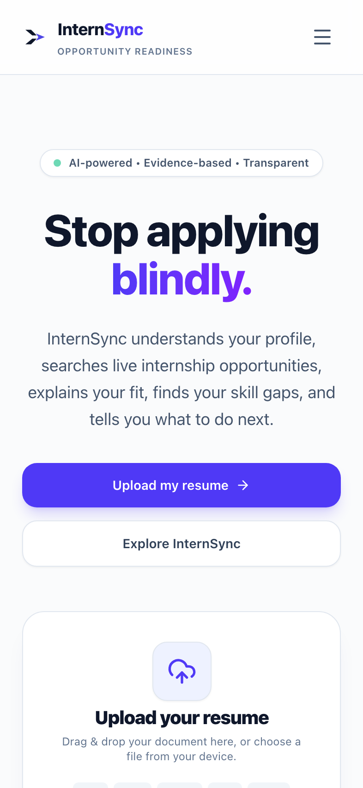
Mobile Hero (393px)
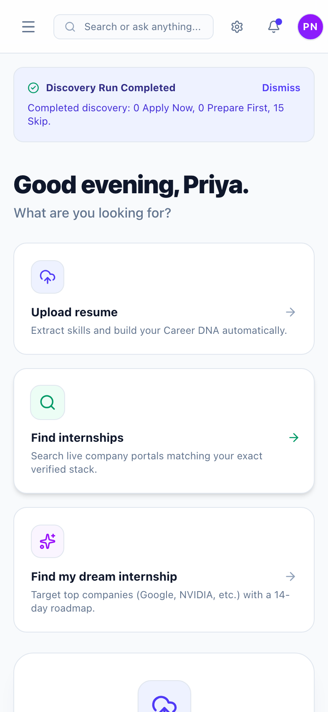
Mobile Dashboard (393px)
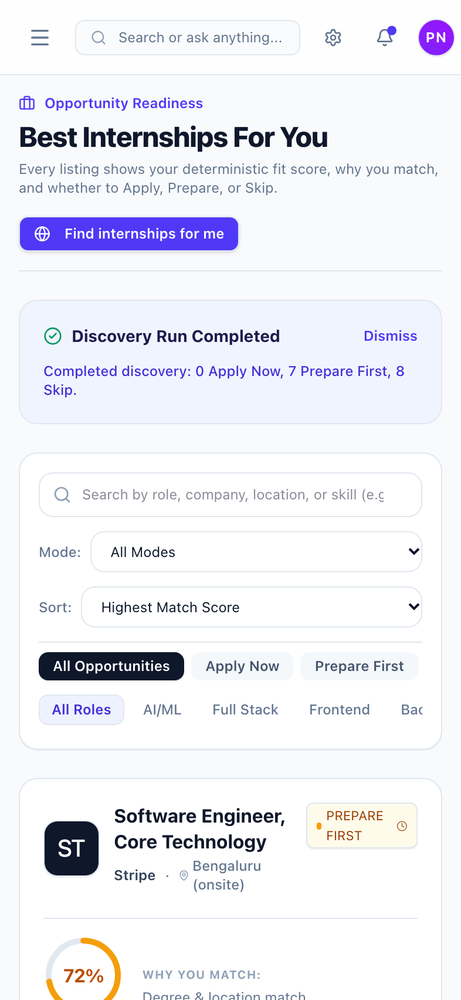
Mobile Feed (393px)
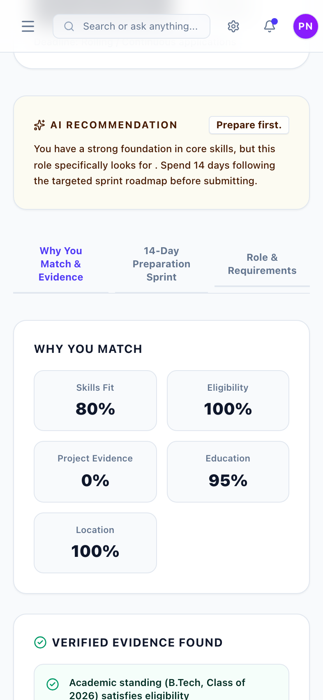
Mobile Detail Modal (393px)
The Future of Opportunity Readiness
From "Where can I apply?" to "Where am I ready to succeed?"
InternSync shifts the paradigm from blind, anxiety-driven mass applications to evidence-based career growth, preparing the next generation of engineers and designers.
Four-Phase Product Roadmap
PHASE 1 • STUDENT READINESS (COMPLETED)
Live MVP
Resume parsing, 8-factor Career DNA, deterministic scoring engine, responsive client.
✓ Multi-format document extraction
✓ Skill evidence mapping
PHASE 2 • OPPORTUNITY INTELLIGENCE (COMPLETED)
Live MVP
ATS ingestion, 243 live listings, requirements extraction, 3-way decision recommendations.
✓ Multi-source ATS aggregation
✓ Explainable match breakdown
PHASE 3 • ACTION & PREPARATION (Q2 2026)
In Progress
Skill Lab personalized step-by-step roadmaps, ATS application sync, mock interview prep.
△ Milestone-based learning
△ Automated status tracking
PHASE 4 • INSTITUTIONAL SCALE (Q3 2026)
Planned
University TPO dashboards, cohort readiness benchmarks, verified employer hiring pipelines.
○ Cohort skill analytics
○ Employer candidate matching
Implementation Note: Institutional scaling (Phases 3 & 4) builds on top of the verified Phase 1 & 2 readiness algorithms tested and deployed today.
Explore the Live Working Product
The judges and evaluation committee can immediately test InternSync without installation:
🌐 Production: https://intern-sync-one.vercel.app
📁 Repository: github.com/Kushh-Santhosh/InternSync
Key MVP Milestones Verified for Level 2
✓ 243+ Active Roles: Live ATS
✓ 8-Factor Scoring: Deterministic
✓ Multi-Tenant: Supabase RLS
✓ Responsive: Desktop & mobile
Evaluation Audit & Integrity Guarantee
Every screenshot in this dossier was captured live from production (intern-sync-one.vercel.app). No mockups, fabricated listings, or hallucinated scores were used.
Zero Placeholder Data
Live Production URL
Open Source Codebase
Submission Team
Team Fensta
Kushal Santhosh P • Ranil Rayen • Kashyap Ram V
"Understand your fit. Improve your profile. Find the right opportunity."